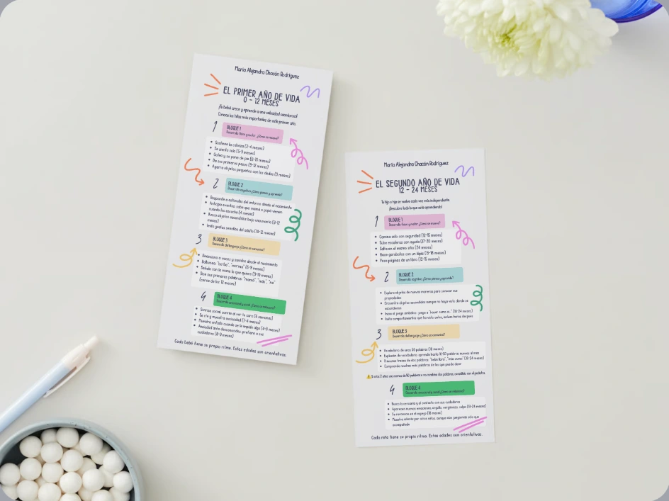

Los tres primeros
años de vida.
Tres infografías para acercarse a los cambios y aprendizajes de la primera infancia.

Crecer, descubrir
y relacionarse.
El material organiza el desarrollo físico y motor, cognitivo, del lenguaje y emocional y social en tres etapas: 0–12, 12–24 y 24–36 meses.
Cada niño tiene su propio ritmo. Las edades que aparecen en el material son orientativas.
LA COLECCIÓN, AL DETALLE
Toca una imagen para ampliarla